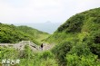
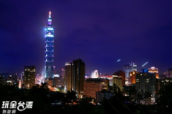
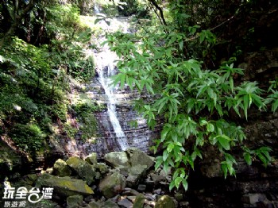

景點介紹
「望幽谷」又名「忘憂谷」，意指站在高處俯瞰綠色山谷使人「忘」卻所有煩「憂」，是八斗子海濱公園觀景台下方綠油油的青翠谷地，春夏之際綠草如茵，秋冬歲末則變成了一片奶油色的大地。望幽谷是一個Ｖ字型的山谷，除了翠綠的草地，還有八斗子漁港來往的漁船，以及可遠眺海另一端的基隆嶼，夜晚時分海面上漁火點點與九份山城的燈火形成一齣唯美的山海之戀。這裡設有多條的石版步道，漫步至海灘，有豆腐岩與海蝕地形等的地質景觀，還可以抓螃蟹與撿貝類，享受當一日漁夫的體驗。
Taipei101大樓位在台北市信義區，是台北市的著名地標，共有地上101層及地下5層，總高度達到508公尺，目前為世界第一高樓。Taipei101大樓主要共分為購物中心、辦公大樓及景觀台，是一棟集合時尚、觀光、商業及文化的大樓，內部有多家銀行及證券金融中心服務於此，並有多家著名大型企業進駐，購物中心內則有時尚服飾、精品、化妝品、書店、餐廳及美食街等店家，88、89及91樓則為室內與戶外觀景台，民眾可購票前往俯瞰台北市，享受居高臨下的視覺饗宴。Taipei101大樓近年來更連續在跨年時刻施放大型煙火及燈光效果，是台北市跨年活動中主要的重頭戲。
彩虹瀑布位在桃園縣復興羅浮村，是在北橫大溪與拉拉山之間，欲進入觀賞彩虹瀑布步行只需三十分鐘的時間，沿途環境優美林蔭蓊蓊蟲鳴鳥叫，空氣也無比清新。在強烈陽光下的彩虹瀑布，會因地形及光影的折射在瀑布下方出現彩虹，這也是彩虹瀑布名稱的由來，此處地形較為平緩，是一處全家大小都適合踏青健行的好去處。
